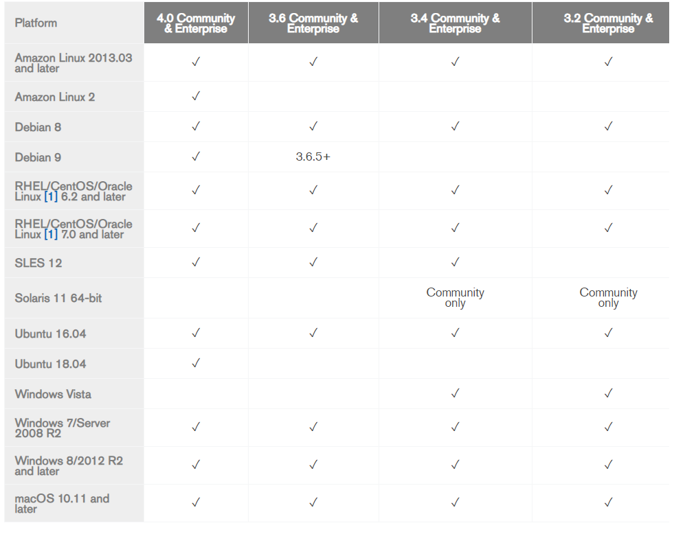

距离上一次使用mongodb数据库了也有很长一段时间，2016年。
再不用用，感觉都要忘记怎么用了233，
而且应该也有很多更新，这次正好项目也需要。来安装一下，并且做个记录！
运行环境 Runtime environment
1 | 操作系统 ： Ubuntu18.04LTS |
背景
最近申请试着申请了oneDriver的云盘，弄到手了20TB，所以打算搭建的方便管理它们的一个web管理平台。
在这里，经过一番筛选，我排除了不太符合自己需求的几个项目：oneIndex（用的人最多,但是要装php）、pyOne(使用的仍然是python2)。
采用CuteOne.
这个项目，使用的是python3,我也不用装那么多个语言编译器了，而且操作界面也很符合我的审美！
其中这个项目它依赖于mongoDB，所以安装它，并部署。
注意
这是个容易让人掉坑的地方。（我掉进去了）
mongDB 环境的支持
从mongDB官网的说明文档我们可以看到：

目前也就是说无论是社区版还是企业版的mongoDB 4.0以下版本都不支持Ubuntu18了，如果装错版本的话，会有奇怪的问题出现。
mongoDB在Linux Ubuntu18.04中安装
安装办法一般分为两种用：
- 从官网下载离线包安装
- 直接通过Ubuntu终端输入apt命令来安装
由于以前尝试过使用离线包安装了，本次打算通过命令行在终端中实现安装，并以此为例。
网上大部分的博客，都比较陈旧了关于安装mongodb的文章，这次就以官方网站的文档安装步骤来操作。
以官方文档为准，绝大多数都没有问题！如果看本文让你无法安装成功，那说明情况出现了变化，所以请自己去官网看最新的说明。
导入包管理系统使用的公钥
sudo apt-key adv –keyserver hkp://keyserver.ubuntu.com:80 –recv 9DA31620334BD75D9DCB49F368818C72E52529D4
为MongoDB创建一个列表文件
echo “deb [ arch=amd64 ] https://repo.mongodb.org/apt/ubuntu bionic/mongodb-org/4.0 multiverse” | sudo tee /etc/apt/sources.list.d/mongodb-org-4.0.list
重新加载本地包数据库
sudo apt-get update
安装MongoDB包（二选一）
安装最新稳定版sudo apt-get install -y mongodb-org
安装指定版本
sudo apt-get install -y mongodb-org=4.0.10 mongodb-org-server=4.0.10 mongodb-org-shell=4.0.10 mongodb-org-mongos=4.0.10 mongodb-org-tools=4.0.10
我根据自己的需要，选择的是第二种..到这一步做完，就已经完成基础的安装操作。
mongoDB在Linux Ubuntu18.04中的基础配置
我喜欢一步到位，在启动mongDB之前，我要先把配置文件配置好。
现在要做的是以下几件事：
- 创建一个目录并且授予mongDB这个目录读写权限，用于存储mongoDB的数据库文件
- 创建一个目录并且授予mongDB这个目录读写权限，用于存放mongoDB的日志文件
- 创建一个目录并且授予mongDB这个目录读写权限，用于存放mongoDB的后台运行pid文件
- 修改配置文件，通过配置文件启动mongoDB
为什么我要做这些？
- 好管理
- 不授予读写权限，mongoDB启动时会报错，这个一般可以在 /var/log/mongodb/mongod.log 看到
- 用配置文件启动更加工整，可以避免一堆冗长的命令行参数看着眼疼，还容易写错
创建有关目录并授权
sudo mkdir -p /data/db/mongodb/
sudo mkdir -p /var/log/mongodb/
sudo chmod -R 755 /data/db/mongodb/
sudo chmod -R 755 /var/log/mongodb/
可选的操作：
默认的mongoDB配置文件一般都在/etc/mongod.conf
如果有个性化的mongoDB配置文件，就统一放在这里
sudo mkdir -p /data/db/conf/
sudo chmod -R 755 /data/db/conf/
修改配置文件
sudo vim /etc/mongod.conf 编辑以下内容
2
3
4
5
6
7
8
9
10
11
12
13
14
15
16
17
18
19
20
21
22
23
24
25
26
27
28
29
30
31
32
33
34
35
36
37
38
39
40
41
42
43
# Where and how to store data.
storage:
dbPath: /data/db/mongodb/
journal:
enabled: true
# engine:
# mmapv1:
# wiredTiger:
# where to write logging data.
systemLog:
destination: file
logAppend: true
path: /var/log/mongodb/mongod.log
# network interfaces
net:
port: 27017
bindIp: 0.0.0.0
# how the process runs
processManagement:
fork: true # fork and run in background
pidFilePath: /data/db/conf/mongod.pid # location of pidfile
timeZoneInfo: /usr/share/zoneinfo
# security:
# authorization:enabled
#operationProfiling:
#replication:
#sharding:
## Enterprise-Only Options:
#auditLog:
#snmp:
保存退出，基本配置到此完成。
mongoDB在Ubuntu18 的使用
- 服务端启动
mongod –config /etc/mongod.conf # “/etc/mongod.conf” 为配置文件路径，根据自己的配置文件修改
或者
sudo service mongod start
运行成功以后：
- 服务端关闭
mongod –config /etc/mongod.conf –shutdown
或者
sudo service mongod stop
- 服务端重启
sudo service mongod restart
4, 服务端状态检查
sudo netstat -tunlp | grep mongod
客户端
- 登陆客户端
mongo
1 | xx@xx:/usr/local$ mongo |
出现类似这样的画面，就说明进入了mongoDB的命令行操作页面了。
- 退出客户端
输出“exit”即可1
2
3
4
5
6
7
8
9
10
11
12
13
14
15
16
17
18
19
20
21
22
23
24
25
26MongoDB shell version v4.0.10
connecting to: mongodb://127.0.0.1:27017/?gssapiServiceName=mongodb
Implicit session: session { "id" : UUID("c424cadd-e847-4973-adfb-6e15e4684689") }
MongoDB server version: 4.0.10
Server has startup warnings:
2019-06-08T14:27:52.771+0800 I STORAGE [initandlisten]
2019-06-08T14:27:52.772+0800 I STORAGE [initandlisten] ** WARNING: Using the XFS filesystem is strongly recommended with the WiredTiger storage engine
2019-06-08T14:27:52.772+0800 I STORAGE [initandlisten] ** See http://dochub.mongodb.org/core/prodnotes-filesystem
2019-06-08T14:27:59.524+0800 I CONTROL [initandlisten]
2019-06-08T14:27:59.524+0800 I CONTROL [initandlisten] ** WARNING: Access control is not enabled for the database.
2019-06-08T14:27:59.524+0800 I CONTROL [initandlisten] ** Read and write access to data and configuration is unrestricted.
2019-06-08T14:27:59.524+0800 I CONTROL [initandlisten]
---
Enable MongoDB's free cloud-based monitoring service, which will then receive and display
metrics about your deployment (disk utilization, CPU, operation statistics, etc).
The monitoring data will be available on a MongoDB website with a unique URL accessible to you
and anyone you share the URL with. MongoDB may use this information to make product
improvements and to suggest MongoDB products and deployment options to you.
To enable free monitoring, run the following command: db.enableFreeMonitoring()
To permanently disable this reminder, run the following command: db.disableFreeMonitoring()
---
> exit
bye
mongoDB在Ubuntu18 的卸载
一顿操作猛如虎..
sudo service mongod stop
sudo apt-get purge mongodb-org*
sudo rm -r /var/log/mongodb
sudo rm -r /data/db/mongodb
sudo rm -r /etc/apt/sources.list.d/mongodb-org-4.0.list
总结
emm,主要的坑还是在版本支持上，其他的基本也是按部就班了。
装这个玩意要耐心，别一顿“下一步下一步”就完了。